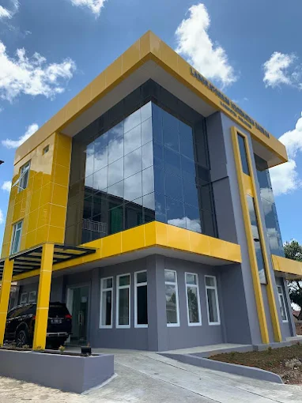
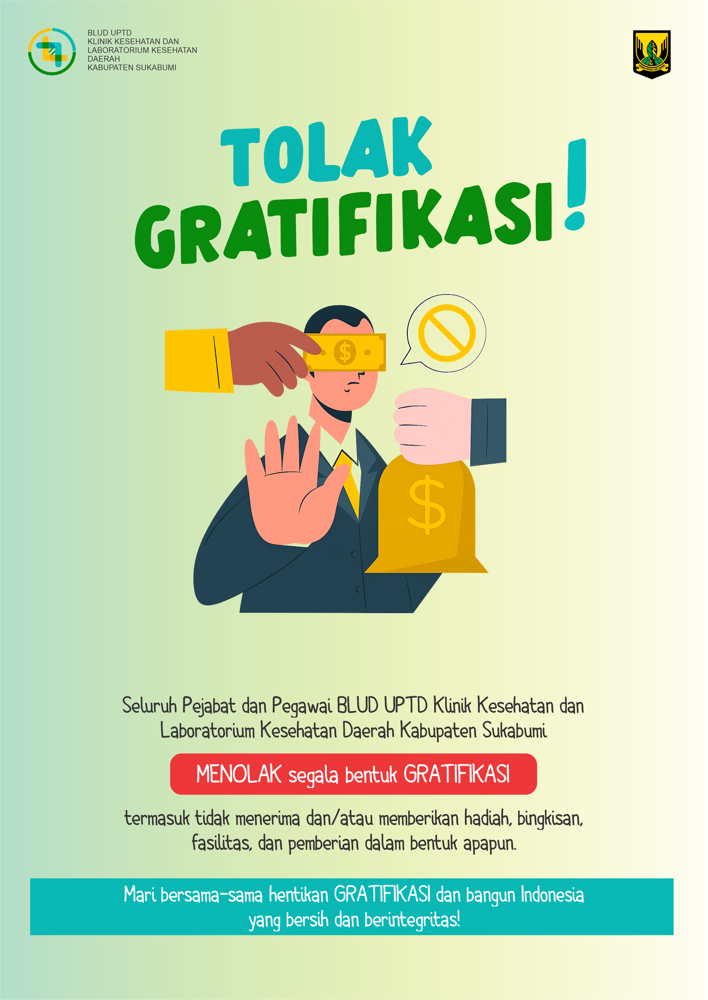

Selamat Datang di Website Resmi BLUD UPTD Klinik Kesehatan Daerah dan Laboratorium Kesehatan Daerah
Memberikan pelayanan laboratorium kesehatan yang profesional, akurat, dan terpercaya untuk meningkatkan kualitas kesehatan masyarakat.
Jenis-Jenis Pemeriksaan
Kami melayani berbagai jenis pemeriksaan laboratorium untuk individu maupun instansi.
Hematologi
Pemeriksaan darah lengkap untuk mendeteksi berbagai kelainan, seperti anemia, infeksi, dan leukemia.
Kimia Klinik
Analisis kadar zat kimia dalam darah seperti gula darah, kolesterol, fungsi hati, dan fungsi ginjal.
Laboratorium Lingkungan
analisis komprehensif untuk pengujian kualitas air minum, air bersih, air limbah, dan badan air (sungai, danau).
Berita & Informasi Publik (PPID)
Informasi terkini seputar kegiatan, layanan, dan pengumuman dari instansi kami.



Hubungi Kami
Kami siap membantu Anda. Silakan hubungi kami melalui informasi di bawah ini.
Alamat
Kompleks Alun-Alun, Cisaat, Kec. Cisaat, Kabupaten Sukabumi, Jawa Barat 43152
Telepon
0857-1802-4486labkesdakabsukabumi@gmail.com
Jam Operasional
Senin - Jumat: 08:00 - 16:00 WIB
Sabtu: 08:00 - 16:00 WIB